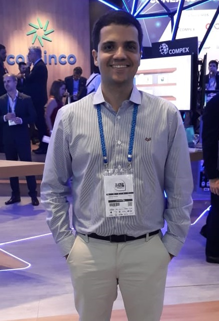

Desenvolvedor & Back-End Fabrício Spanó

Contato
Idade: 32 anos
Endereço: Rua Ércole Verri, 269, ap. 33
Vila Ana Maria – Ribeirão Preto/SP
Telefones: (16) 98848-0948
E-mail: fabriciospano@gmail.com
Site:www.fabriciospano.com
Objetivo
Atuar no desenvolvimento e suporte de softwares e sistemas em uma empresa com reconhecimento no mercado, ajudando-a em seu desenvolvimento e contribuindo para o meu crescimento profissional.
Formação Acadêmica
- Graduação em Engenharia da Computação - UNIVESP - Universidade Virtual do Estado de São Paulo – Ago/2017 a Jul/2022 (previsto);
- Graduação em Arquitetura e Urbanismo - Instituto de Arquitetura e Urbanismo de São Carlos (IAU-USP ) – Fev/2006 a Dez/2011;
Computação
- ERP Consinco – Avançado;
- PL/SQL – Avançado;
- Tracer (Statement Tracer For Oracle) – Avançado;
- SQLyog / MySQL Workbench - Intermediário;
- Programação em Python – Básico;
- Programação em Java – Básico;
- Programação em C – Básico;
- Delphi – Básico;
- HTML / CSS - Básico;
- AutoCad, Revit, Corel Draw, Photoshop, Ilustrator, SketchUp, Pacote Office – Avançado.
Idiomas
- Inglês – Avançado;
- Espanhol – Avançado;
- Francês – Avançado.
Experiência Internacional
- Intercâmbio na França na École National Supérieure d’architecture de Grenoble pelo convênio do Instituto de Arquitetura e Urbanismo de São Carlos, IAU-USP – Jul/2009 a Jul/2010;
- Workshop SILACC 2008 - Simpósio Latino Americano Cultura: Reflexões e Projetualidade Hoje - Santa Fé, Argentina – Out/2008;
Experiência Profissional
- Atual
- CONSINCO – Técnico de Suporte Pleno – Unidade Premium - Jul/2019 a Atual;
Atendimento ao cliente através das ferramentas disponibilizadas e identificação dos Bugs do produto considerando a regra do varejo e as diferentes soluções dos clientes.
- CONSINCO – Consultor Interno de Service Desk – Jan/2018 a Jul/2019;
Curso de Fundamentos do Software ERP Consinco e atuação como Consultor Interno de Service Desk.
- Anterior
- FABRICIO SPANÓ Arquitetura e Urbanismo – Dez/2016 a Nov/2017;
Atuação no desenvolvimento conceitual, executivo e na coordenação de projetos de arquitetura e urbanismo.
- RIBAS.COTRIM Arquitetos Associados – Arquiteto e Urbanista – Abr/2012 a Dez/2016;
Coordenador e gerente de projetos de arquitetura e urbanismo.
- IAU / USP – Estagiário de Arquitetura e Urbanismo – Jan a Set/2011;
Atuação na Revisão do Plano Diretor de São Carlos.
- Stéfani Nogueira Incorporação e Construção – Estagiário de Arquitetura – Jan a Fev/2009;
Acompanhamento de obra e atendimento a clientes.
Atividades e Cursos Complementares
- Ganhador do Projeto Inovação 2018 – Consinco
Desenvolvimento de sistema de análise de versatilidade empresarial, utilizando as ferramentas Delphi, PL/SQL e Power-BI.
-
- Curso de Fundamentos do Software ERP Consinco - Comercial / Entradas e Saídas – Jan a Mai/2018;
Foram abordados conceitos negociais e procedimentos operacionais no software sobre:
- Cadastros Estruturais
- Recebimento Notas Fiscais, Estoques, Custos
- Nota Fiscal com Frete, de Produtores Rurais e Conferência de Recebimento
- Operações Gerais de Estoque e Integração Financeira
- Impostos na Entrada: ICMS, ICMS-ST, IPI, Funrural, PIS e Cofins
- Pedidos de Compras Manuais, Automáticos e Abastecimento
- Formação de Custos
- Bonificações
- Produção Interna
- Relatórios Gerenciais
- Formação de Preços, Custos e Margens
- Precificação
- Pedidos de Vendas
- Expedição e Faturamento
- Impostos na Saída: ICMS, ICMS-ST, PIS e Cofins
- Geração de Cargas, Devolução, Cancelamento
- Roteirização de Cargas
- Venda por PDV
- Inventário
- Curso SQL Consinco – Nível Avançado – Jan a Mai/2019;
- Curso SQL Consinco – Nível Básico – Jan a Mai/2018;
- Curso Tracer (Statement Tracer For Oracle) - Ferramenta de Rastreamento de Códigos SQL – Jan a Mai/2018;
- Curso de Rotinas Internas - Melhores Práticas de Chamados e 0800 Net – Jan a Mai/2018;
- Curso de Processos – Sistema Comercial – Documentos Fiscais Eletrônicos – Jan a Mai/2018;
- Curso de Conexões Remotas e Atualização de Versões – Jan a Mai/2018;
- Curso de Introdução ao BIM (Building Information Modeling) – Jul/2015;
- Curso de REVIT ARCHITECTURE – básico, carga horária de 36h – Out/2010.
Atividades de responsabilidade social
- Centro Espírita Joanna de Angelis (CEJA) – Coordenador do Departamento do Livro e Publicações em Ribeirão Preto – Jan/2016 a Atual;
- Feira do Livro Espírita de Ribeirão Preto (FLERP) – Atuação como voluntário na organização da feira – Out/2013/ 2014/ 2015/ 2016/ 2017/ 2018;
- Associação Sindrome do Amor (ASDA) - Apoio à gestão de patrimônio e participação no desenvolvimento da futura sede da ONG de Ribeirão Preto – Fev/2012 a Jun/2013.